Documentation
Install the Blender add‑on, pair your iPhone, and start monitoring.
How to Install the Add-on in Blender
- Open Blender.
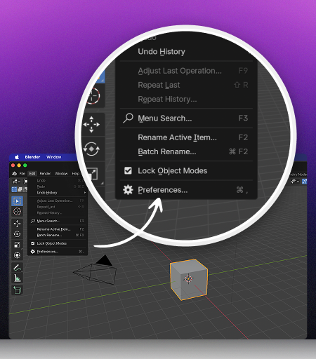 - From the top menu, go to Edit → Preferences.
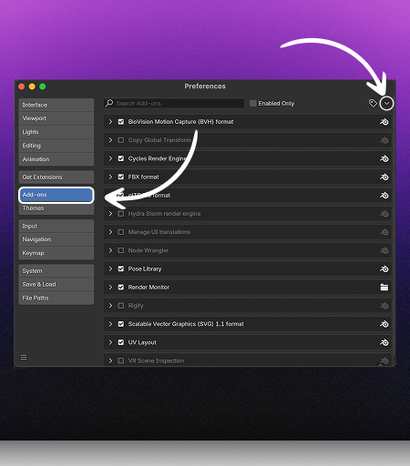 - Click Install from Disk.
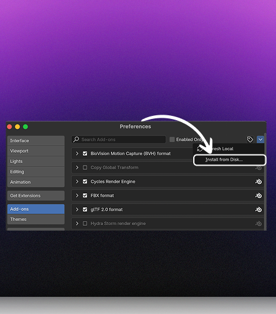 - Select the downloaded .zip file.
- Make sure “Enable on Install” is checked.
- Once installed, go to Render Properties → scroll down → you’ll see Render Monitor Add-on.
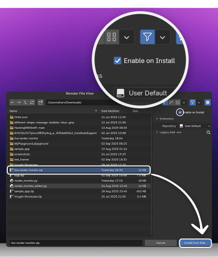
How to Link Your Devices
- In Blender, click on Link Device (Get Code).
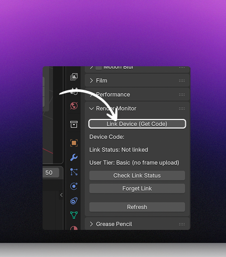 - You will receive a 6-digit code.
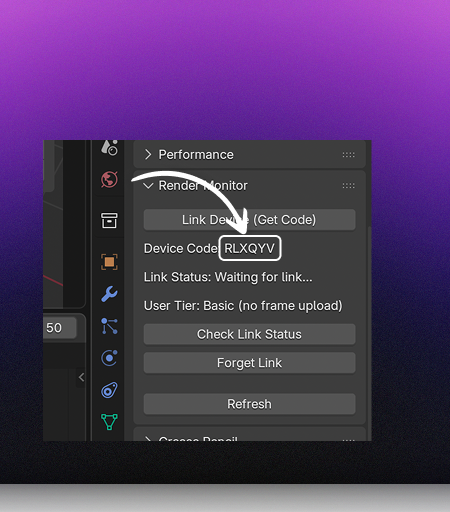 - Open the iOS app → tap the Link symbol.
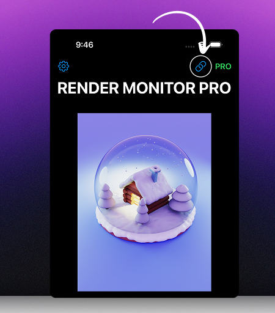 - Enter the 6-digit code into the pop-up → tap Confirm Code.
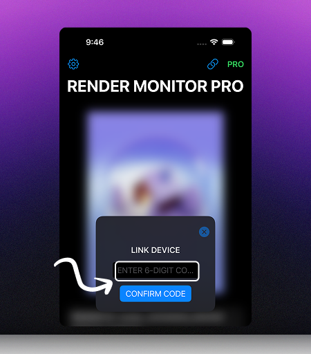 - In the Blender add-on, click Check Status.
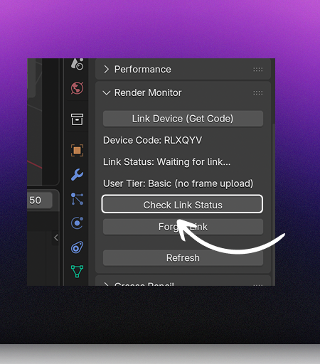 - 🎉 Congratulations! Your Blender is now linked to your iOS app.
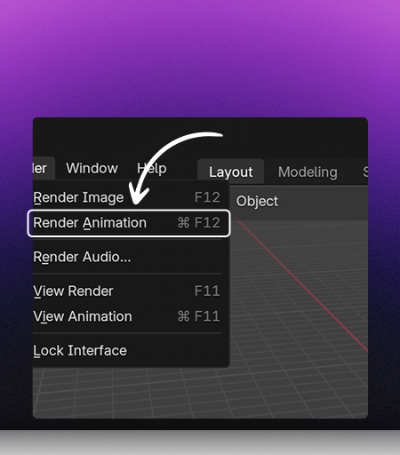 - Whenever you hit Render Animation, your render data will instantly sync with the app.
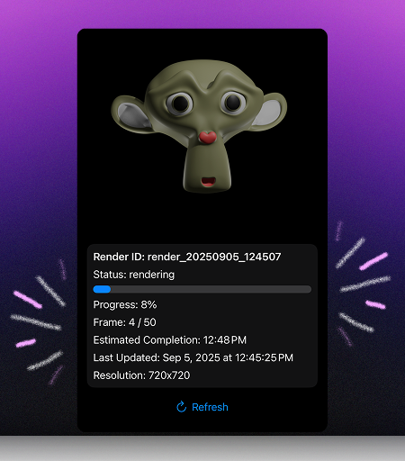
Frame Preview is available only for Pro users